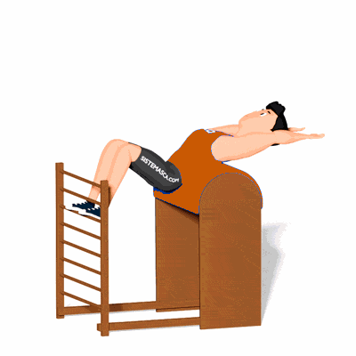

Sit Up no Ladder Barrel

O exercício trabalha o fortalecimento dos músculos do abdômen, mais especificamente o reto abdominal e oblíquos interno e externo.
Ficha Técnica
Tipo: Pilates
Grupo Muscular: Abdome
Aparelho: Nenhum
Músculos: Nenhum
Como realizar
- Em decúbito dorsal sobre o Barrel, deixe os cotovelos estendidos com as mãos atrás da cabeça. Os pés ficam apoiados no espaldar e os joelhos fletidos aproximadamente a 80°;
- Enrole a coluna até retirar as escápulas do Barrel. Com o passar do tempo comece a aumentar a amplitude do movimento;
- Retorne a posição inicial e tenha cuidado com a região cervical.
 RC STORE
RC STORE